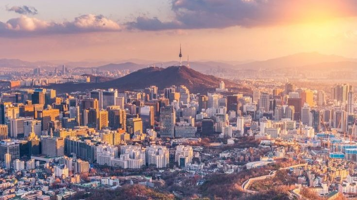

Masbate is an island province located in the Philippines. It is renowned for its stunning beaches and lush agricultural land. The province attracts tourists looking for natural beauty and adventure. Many visitors enjoy swimming, snorkeling, and relaxing on the sandy shores. Masbate's landscapes are perfect for outdoor activities.
One of the province's highlights is its cattle ranching. Masbate is famous for its rodeo festivals, which showcase local traditions. These events draw both locals and tourists eager to experience the excitement. The rodeos feature various competitions, including bull riding and lassoing. This cultural celebration reflects the pride of the people in their agricultural heritage.
Masbate City, the capital, is the main hub for trade and commerce. It offers a variety of markets and shops for residents and visitors. The city is also known for its vibrant cultural scene, with festivals held throughout the year. Locals celebrate their history and traditions through music and dance. This lively atmosphere makes Masbate a unique place to explore.

Korea is a peninsula situated in East Asia, divided into two distinct countries: North Korea and South Korea. This geographical separation has led to different political systems and cultures. Despite their differences, both nations share a rich history and cultural heritage. They have many traditional practices, including music, art, and cuisine. The division has created a unique cultural landscape in the region.
South Korea is widely recognized for its advanced technology and innovation. Cities like Seoul are vibrant and bustling with life, showcasing modern architecture and entertainment. The country is also famous for its pop culture, including K-pop and Korean dramas. This cultural phenomenon has attracted fans from all over the world. South Korea's influence continues to grow on the global stage.
North Korea, on the other hand, is known for its strict government and military focus. The country has a different way of life, heavily influenced by its political system. While it has a rich cultural heritage, it often remains isolated from the rest of the world. The contrast between the two Koreas highlights the complexity of their shared history. The Korean Wave, or "Hallyu," has helped bridge some of these cultural gaps, popularizing Korean culture globally.

Bacolod is a vibrant city located in the Philippines, often referred to as the "City of Smiles." This nickname reflects the warmth and friendliness of its residents. The city is known for its welcoming atmosphere and rich cultural heritage. Bacolod has a lively spirit that attracts visitors from various places. It serves as a great introduction to the beauty of the region.
One of the highlights of Bacolod is the annual MassKara Festival. This exciting event features colorful masks and lively street dancing. Locals and tourists alike participate in the festivities, creating a joyful atmosphere. The festival showcases the creativity and talent of the community. It is a celebration that truly embodies the spirit of Bacolod.
Bacolod is also famous for its delicious cuisine, especially chicken inasal, which is a type of grilled chicken. The city's culinary offerings are a major attraction for food lovers. Additionally, Bacolod serves as a gateway to nearby attractions, including historical sites and beautiful sugar plantations. Visitors can explore the rich history and natural beauty of the area. The friendly locals and vibrant culture make Bacolod a must-visit destination for tourists.
Italy is a beautiful country located in Southern Europe, known for its rich history and cultural heritage. It has made significant contributions to art and architecture over the centuries. Famous figures such as Leonardo da Vinci and Michelangelo have left a lasting impact on the world. The country is a treasure trove of museums and historical sites. Visitors can explore the depth of Italy's artistic legacy in every city.
Italian cuisine is another highlight that attracts people from around the globe. Dishes like pasta, pizza, and gelato are loved by many and are staples in Italian culture. Each region offers its own unique flavors and specialties. Food is an essential part of Italian life, often enjoyed with family and friends. The culinary traditions reflect the country’s diverse history and regional influences.
Italy's stunning landscapes add to its allure, ranging from the majestic Alps in the north to picturesque coastlines along the Mediterranean. Major cities like Rome, Florence, and Venice are filled with charm and historical significance. Each city has its own unique character and attractions that draw millions of tourists each year. Visitors can experience ancient ruins, beautiful art, and vibrant street life. Italy truly offers a captivating blend of history, culture, and natural beauty.
Israel is a country located in the Middle East, bordered by the Mediterranean Sea. It is famous for its rich history and significant religious sites. Jerusalem, in particular, holds sacred importance for Judaism, Christianity, and Islam. The city is a focal point for pilgrims and tourists alike. Israel's historical landmarks tell stories that span thousands of years.
The culture of Israel is diverse, shaped by various ethnic groups and traditions. This blend results in a vibrant society with a rich tapestry of languages, foods, and customs. Festivals and cultural events celebrate this diversity throughout the year. The arts, music, and dance reflect the country's unique heritage. Visitors can experience a lively mix of old and new in everyday life.
Israel is also recognized for its technological innovations and advancements in agriculture. The country has made significant contributions to fields like science and technology. Its landscapes are equally impressive, ranging from arid desert areas to lush green hills. These varied terrains offer a stunning backdrop for outdoor activities. Israel’s natural beauty attracts nature lovers and adventurers from around the world.